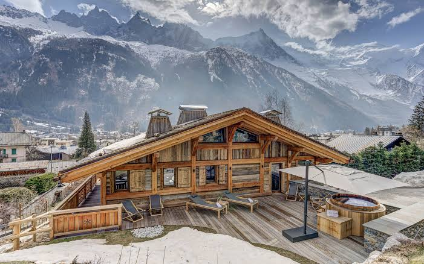
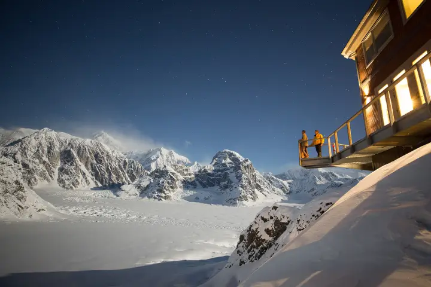
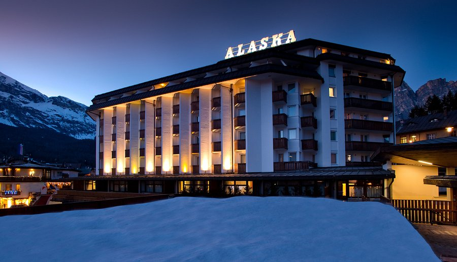
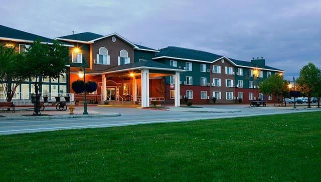

UM REFÚGIO NO NORTE
Nosso site apresenta uma pousada no coração do Alaska, cercada por paisagens geladas, montanhas e uma natureza única. Aqui, o clima frio se mistura com a cultura e a história local, criando uma experiência aconchegante, confortável e autêntica para quem deseja conhecer o verdadeiro espírito do norte.





ALÉM DAS BELEZAS DO ALASKA
O Alaska vai muito além de suas belas paisagens, montanhas e geleiras. Sua história é marcada por diferentes povos, culturas e acontecimentos que ajudaram a construir a identidade do estado. Conhecer essa história é também conhecer melhor a vida, os costumes e as tradições de quem vive nessa região tão única.
SOBRE O ALASKA:
A história moderna do Alaska começou em 1741, quando exploradores russos chegaram à região. A presença russa cresceu através da caça de lontras-marinhas e do comércio de peles. Com o tempo, os altos custos e as dificuldades de manter o território fizeram a Rússia vender o Alaska aos Estados Unidos em 1867. Durante décadas, a região permaneceu como território americano. A descoberta de petróleo trouxe grande importância econômica ao Alaska, que finalmente se tornou o 49º estado dos Estados Unidos em 1959.
Quyana cakneq!
Muito obrigado!